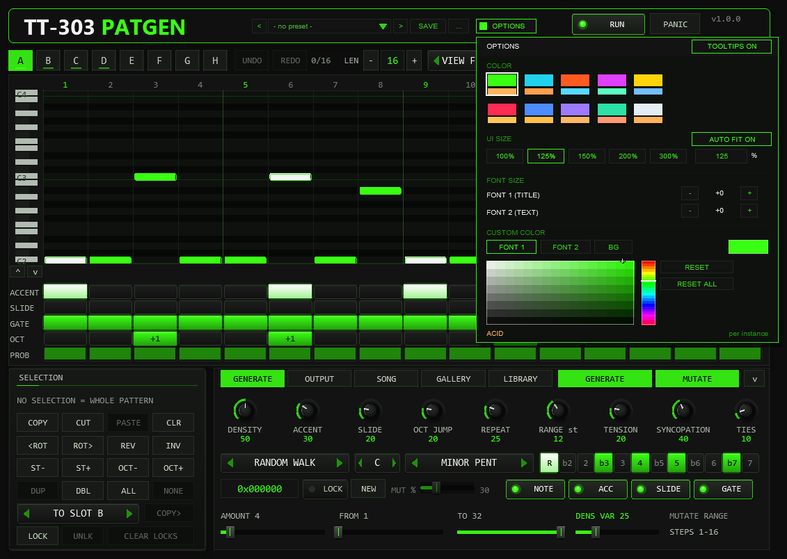
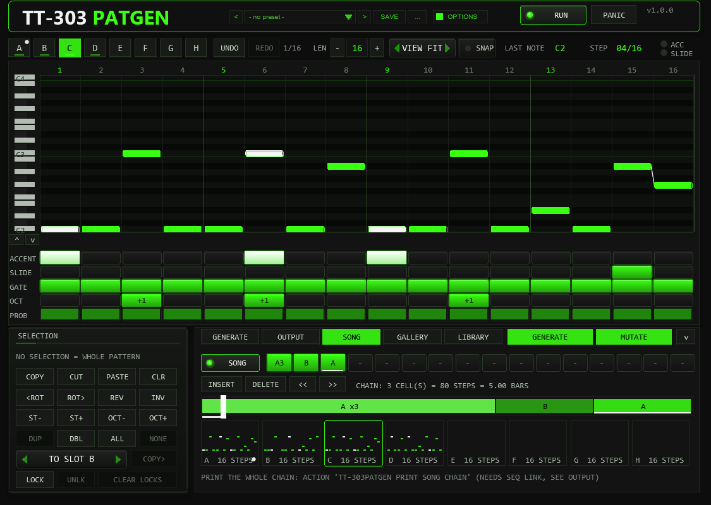
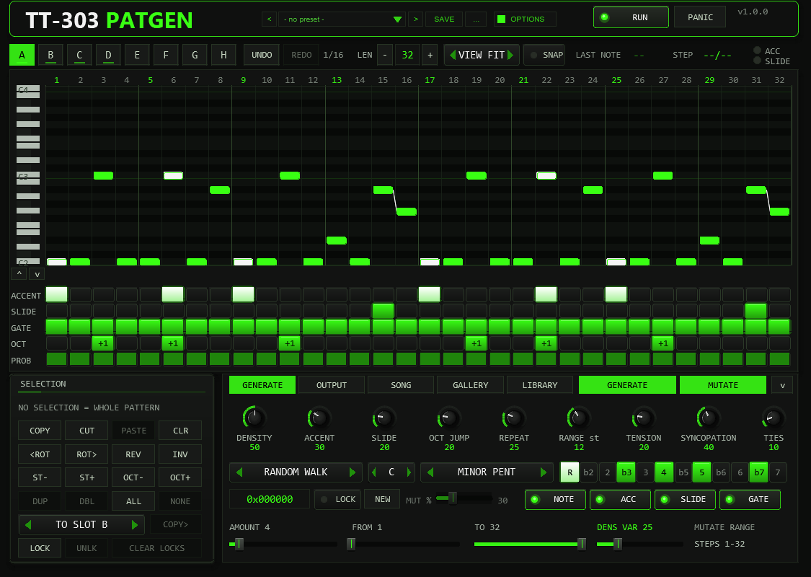
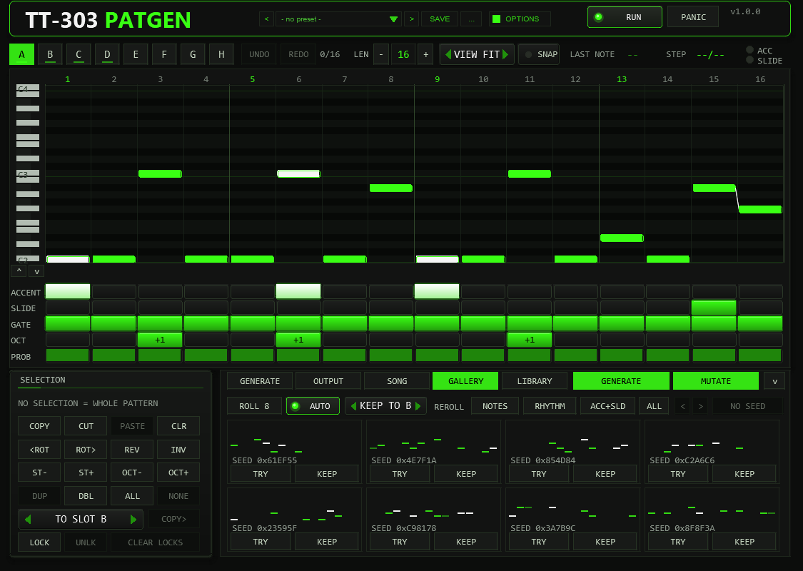
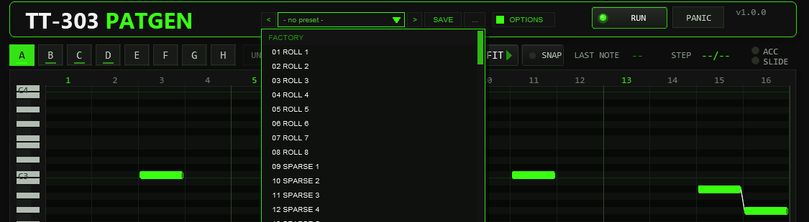

01The concept
TT-303PATGEN is a MIDI effect. It contains no sound generator: it writes patterns and plays them as MIDI notes, locked to the host transport. A pattern has 1 to 32 steps; every step carries a note, an octave shift, a gate state (off, on or tie), an accent flag, a slide flag and a probability. That is exactly the vocabulary of a TB-303 sequencer, which makes the output a perfect match for the TT-303 in HOST mode (velocity at or above the accent threshold = accent, overlapping notes = slide) — and it plays just as well on any other mono bass synth.
The generator is deterministic. Every pattern comes from a 24-bit
SEED; the same seed with the same settings always produces the
same pattern, and the seed is always visible, so a good result can be found
again. Instead of re-rolling a pattern you like, you mutate it: change a
few steps, only in the range you choose.
What it is not: no synth (it makes no sound), no phrase library player, no arranger — and it needs REAPER’s transport. It is the free-standing pattern brain in front of your favourite 303-style synth; paired with the TT-303 it forms a complete, free acid rig.
02Quick start
- Insert
TT-303PATGENbefore the synth in the track’s FX chain (MIDI effects work top to bottom). For the TT-303 leave itsModeon HOST. - Press play. The demo pattern in slot A starts immediately — the
RUNtoggle (top right) enables output. - Press GENERATE. A new pattern appears in the active slot, the seed box shows its seed.
- Shape the result with the GENERATOR knobs and the scale / root / algorithm boxes, generate again, or press MUTATE to vary the current pattern.
- Click in the piano roll to set notes, in the ACCENT / SLIDE / GATE rows to edit the steps. Select steps by clicking or dragging the step numbers, then use the SELECTION buttons. Play a MIDI key (C2 = original pitch) to transpose live.
- Open the GALLERY tab and press ROLL 8 to see eight candidates at once; TRY puts one into the slot.
Or start from a curated scene: the FACTORY list of the preset bar holds
S01–S40, each a whole musical starting point (generator, scale, tempo suggestion, matching TT-303 sound). - Happy? Turn on
SEQ LINKand run the ReaScript TT-303PATGEN Print to MIDI Item to turn the pattern into a real MIDI item.
03The front panel
- HEADER
- Wordmark, the preset bar (see Preset bar & user bank), the
OPTIONSbutton, theRUNtoggle andPANIC. - OPTIONS
- The
OPTIONSbutton in the header, right of the preset bar, opens a small box with the COLOR choice: ten colour schemes (see below), the font and colour settings and theTOOLTIPS ON / OFFswitch. Every control, including the preset bar and theOPTIONSbutton, has a tooltip that appears after a short hover (about 0.35 s) and stays away while you drag; the switch turns all tooltips off for this plug-in instance and is saved with the project. - TOOL ROW
- Slots A–H,
UNDO/REDOwith the undo depth (e.g. 3/16), the pattern length (− value +, 1–32),VIEW(FIT / 1-16 / 17-32) andSNAP. At the right end sits the MIDI monitor: last note sent, current step, ACC and SLIDE LEDs. It turns intoWAITING FOR AUDIOwhen commands are not being executed (see Troubleshooting) and intoBUSYfor a moment when the command queue is full. - PIANO ROLL
- The whole pattern across the full width: with
VIEW FITevery step of the pattern is visible at once (up to 32 columns),1-16/17-32show one page with wider columns. The roll shows 25 semitone rows aboveROOT; the mouse wheel over the keyboard moves this window (Shift = one octave), the arrow buttons below it move it by an octave, and a note outside the window is marked with a small arrow at the edge. Click = set note, drag = move it, click a note or right-click = remove it. Accented notes are white, ties extend to the next step, slides are drawn as a connecting line, an orange dot marks a probability below 100 %. The green column is the step that is playing. The number row above the roll selects steps (see MUTATE & edit operations). - STEP ROWS
ACCENT,SLIDE,GATE(off / on / tie),OCT(-1, 0, +1, +2) andPROB(0–100 %). Click a cell or drag across cells to paint; right-click resets the cell.- SELECTION
- Bottom left: copy / cut / paste / clear, rotate, reverse, invert, scale-degree and octave transpose, duplicate, double, copy to another slot, and the step locks. Every button acts on the selected steps; without a selection it acts on the whole pattern.
- DECK
- Bottom right, with five tabs:
GENERATE(the nine generator knobs, algorithm, root, scale, seed, MUT %, MUTATE properties and range),OUTPUT(rate, channel, swing, gate length, velocities, humanize, threshold, octave, FOLLOW IN, SEQ LINK, LINK ID),SONG(chain, chain editing, timeline, slot overview),GALLERYandLIBRARY. The big GENERATE and MUTATE buttons are always visible next to the tabs. The arrow at the right edge collapses the deck: the roll then uses the whole height and shows the full range (-12 to +35 semitones without scrolling) - the FOCUS view. Click a tab to open the deck again.
| Widget | Gesture | Behaviour |
|---|---|---|
| Knob | drag vertically | set value; Shift = fine |
| mouse wheel | one step per detent (1 unit; HUM TIME 0.1 ms) | |
| right-click, double-click, Ctrl+click | reset to default | |
| Slider (AMOUNT / FROM / TO) | drag horizontally / wheel | set value; one step per detent |
| Combo box | arrows / click / wheel | previous / next / step through the list |
| Step rows | click, drag | paint the value the first click chose |
| Step numbers | click, drag, Shift+click, double-click, right-click | select one step, a range, extend, all, clear the selection |
| Piano roll | Ctrl+drag | select the steps under the frame (no note is set) |
| Piano roll | Alt while setting or dragging a note | inverts SNAP for this edit |
| Keyboard (left of the roll) | mouse wheel, right-click | scroll the visible pitch window, back to ROOT..ROOT+24 |
| Any control | hover | a tooltip explains it (OPTIONS > TOOLTIPS ON / OFF) |

OPTIONS in the header, then a swatch. A click outside the box closes it.Options / Color. The OPTIONS button opens the box; COLOR offers ten schemes:
ACID, CYAN, ORANGE, MAGENTA, YELLOW, RED, BLUE, VIOLET, MINT and ICE. A scheme changes the accent colour (knob rings, active
steps, LEDs), the second colour and, for RED to ICE, the slightly tinted panel background of the whole front at once. The choice applies
per plug-in instance, is saved with the project and with FX-chain copies, and is not touched by the generator. The factory colour is ACID
(the classic acid green). The colour is stored in the hidden parameter 64 (UI Color, 0–9).
Style: font size and custom colours. Below the swatches the box carries the style controls: FONT SIZE scales the two font slots in steps of about 8 % (range -4–+8) — FONT 1 is the large title font, FONT 2 is all other text; the current step is shown between the - and + buttons. The colour picker assigns a custom colour to FONT 1, FONT 2 or the background BG: pick the target, then drag in the hue strip and the saturation/value field — every change applies live while you drag, and BG derives the panel, border and knob colours from the spacing of the active scheme. RESET restores the scheme value of the selected target, RESET ALL restores everything. If a custom text colour drops below a contrast of 3:1 against the background, the box shows a small warning. All style settings apply per instance, are stored with the project, the FX chain and REAPER presets — and are not part of the factory or user presets of the preset bar.
04The pattern model
| Field | Values | Meaning |
|---|---|---|
| Note | semitones above ROOT | the piano-roll row; final MIDI note = 36 (C2) + ROOT + 12 x OCTAVE + note + input transpose |
| Octave | -1 / 0 / +1 / +2 | shifts the step by whole octaves |
| Gate | off / on / tie | tie: the previous note keeps sounding into this step, no new note-on |
| Accent | 0 / 1 | note is sent with ACC VEL instead of NORM VEL |
| Slide | 0 / 1 | links this step to the next one: the next note-on is sent before this note-off |
| Probability | 0–100 % | chance that the step plays; decided by a hash of seed, step and position, so playback is reproducible |
- Slide rule. A slide only sounds if the next step is a normal gate step. Into a rest it is ignored, into a tie the tie wins. A slide into the same pitch is played as a tie (holding a note; the second accent is not retriggered). Slides work across the pattern end (last step into step 1).
- Tie. The note is released after the last step of the tie run plus the gate length. A tie after a rest starts a new note.
- Ranges. A pattern can hold notes from 12 semitones below to 35 above ROOT; the generator stays
inside 0..
RANGE.
05The generator
GENERATE fills the active slot. Order of work: gate mask, ties, notes, accents, slides, octave jumps. (Since v0.8.0 the rhythm is drawn so that neighbouring notes exist for slides, DENS VAR can vary the note count and SLIDE counts notes, see below.)
| Control | Range | Function |
|---|---|---|
DENSITY | 0–100 % | share of steps that play (gate on or tie), e.g. 50 % of 16 = 8 steps. With DENS VAR at 0 the count is exact; DENS VAR spreads it around that number |
DENS VAR | 0–100 % | (v0.8.0) spreads the number of playing steps symmetrically around DENSITY, at most half the pattern length at 100 (the average stays); default 25, 0 = exact count. CLASSIC MUT ignores it |
ACCENT | 0–100 % | chance that a normal gate step is accented |
SLIDE | 0–100 % | (v0.8.0) share of the playing steps that slide into the next normal gate step: 20 % of 8 notes = 2 slides (never more than there are neighbouring pairs). The rhythm is drawn so that such pairs exist (EUCLID joins onsets into pairs). Before v0.8.0 it was a 20 % chance per pair, 0.65 slides per pattern on average |
OCT JUMP | 0–100 % | chance of +1 octave (rarely +2); only if the note stays inside RANGE |
REPEAT | 0–100 % | tendency to repeat the previous note |
RANGE | 5–24 st | ambitus above ROOT; the base line lives in the first octave (up to 11 semitones), octave jumps add to it. No note leaves 0..RANGE |
TENSION | 0–100 % | share of dissonant tones: the minor second (b2) and the tritone. Only scales that contain them are affected (Phrygian, Blues, Phrygian Dominant, Chromatic, Whole Tone); the minor pentatonic has neither |
SYNCOPATION | 0–100 % | moves the weight of the rhythm from the downbeats to the offbeats |
TIES | 0–100 % | chance that a step right after a playing step becomes a tie |
Algorithms (ALGO):
| Algorithm | Rhythm | Melody |
|---|---|---|
| RANDOM WALK | weighted choice of DENSITY x length steps (downbeat-heavy, shifted by SYNCOPATION; DENS VAR varies the count, neighbours of a chosen step get more weight the higher SLIDE is) | small scale-degree steps preferred (weights 36 / 26 / 14 / 8 / 4 for 1–5 degrees), pulled to the root on strong steps |
| MARKOV | as above | transition table over the 12 pitch classes, counted from the plug-in’s own 32 library patterns (+ smoothing), weighted by closeness |
| EUCLID+WALK | Euclidean rhythm E(k, n), first onset on step 1 (v0.8.0; before it ended each group), rotated by SYNCOPATION; with SLIDE > 0 onsets are joined into pairs so slides can happen | random walk |
| MOTIF+VAR | as random walk | the first four steps form a motif, repeated in every bar with 25 % variation per note (70 % on the last step) |
| CLASSIC MUT | from a library pattern | a random library pattern, snapped to the chosen scale and RANGE, then every step is mutated with MUTATE % probability. Gate, accent and slide come from the library (DENSITY etc. are not used) |
Scales: Minor Pentatonic, Natural Minor, Phrygian, Harmonic Minor, Dorian, Chromatic, Blues, Phrygian Dominant, Whole Tone and Custom (the 12 keys under the scale box). Every generated note lies inside the chosen scale — verified over 10 000 patterns per scale.
06SEED & LOCK
| LOCK | GENERATE does |
|---|---|
| ON | uses the shown seed: the same pattern every time (recall) |
| OFF | draws a new random seed, shows it, and generates from it: lock it to keep or re-create the result |
The seed is 24 bit (shown as 0xF4B2A7). Mouse wheel over the box steps ±1
(Shift = 16), right-click sets 0, NEW draws a fresh seed without generating. The generator uses
an XorShift PRNG; per-step probability and humanize use a stateless hash of (seed, step, position), so they
repeat exactly on every play.
07MUTATE & edit operations
MUTATE changes AMOUNT distinct steps inside the reroll range FROM..TO
(e.g. FROM 9 to only vary the second half). Each chosen step gets one of the enabled properties
(NOTE moves the note along the scale, ACC flips the accent, SLIDE flips the
slide, GATE switches the step on or off). The mutation sequence is reproducible from seed and press
count; every GENERATE starts it again.
| Button | Operation |
|---|---|
<ROT / ROT> | rotate the pattern one step (wraps around the length; slide flags travel with their step) |
REV | reverse; slides are links between two steps, so they are moved to the mirrored link; ties stay attached to their note (twice = original) |
INV | mirror the pitches around ROOT, snap to the scale, lift the whole pattern by octaves until nothing is below ROOT |
DBL | double the length (16 becomes 32, second half = copy). Only for lengths up to 16 |
CLR | clear the slot |
These buttons (and their SELECTION versions below) are undoable with UNDO; REDO repeats an undone step.
Selection and range operations (v0.7.0)
Click a step number to select that step, drag across the numbers for a range, Shift+click extends the selection, double-click selects all steps, right-click on the numbers clears it; Ctrl+drag in the roll selects the steps under the frame. A green band marks the selection over the roll and the step rows. The buttons of the SELECTION panel act on it; without a selection they act on the whole pattern (and use exactly the whole-pattern commands described above).
| Button | On the selection |
|---|---|
COPY / CUT / PASTE | copy the selected steps, cut them, paste at the start of the selection (step 1 without a selection), clipped at the pattern end. Without a selection COPY / PASTE move the whole slot (length included) as before. The clipboard is shared by all slots, so this also copies steps between slots. |
CLR | gate off; the pitches stay as ghost notes (ties that would hang on a cleared note are cleared with it) |
<ROT / ROT> | rotate inside the selection (wraps within it) |
REV / INV | reverse (slides move to the mirrored link, the link after the last selected step stays, ties stay attached) / mirror around ROOT and snap to the scale |
ST- / ST+ | one scale degree down / up (a tone that would leave -12..+35 stays) |
OCT- / OCT+ | octave field -1 / +1 (limits -1 and +2) |
DUP | copy the selection directly behind itself (clipped at the pattern end) |
TO SLOT + COPY> | copy the selected steps into another slot at the same positions (a shorter target is extended; undoable) |
MUTATE inside the selection. With a selection, MUTATE only touches the selected steps; the FROM / TO sliders are left alone and
apply when nothing is selected. The line MUTATE RANGE in the GENERATE tab shows which range is active.
SNAP puts notes you set or drag onto the scale (ROOT + SCALE); hold Alt to invert it for one edit. It is off by default.
Step locks (v0.7.0)
LOCK in the SELECTION panel locks the selected steps (the whole pattern without a selection); a locked step is marked in orange above
the number row. GENERATE, MUTATE and the REROLL buttons of the GALLERY leave locked steps unchanged, so you can keep the
four notes you like and let the generator find the rest. UNLK unlocks, CLEAR LOCKS clears them for the active slot. Direct edits and
the selection operations still change locked steps (they are your own hand), and rotating or reversing does not move the locks. Locks are saved with the project
(they sit behind the preset bank; older versions of the plug-in simply ignore them). Loading a preset, scene or INIT clears them.
Gallery and partial reroll (v0.7.0)
The GALLERY tab draws eight candidates from the current generator settings for the length of the active slot
(ROLL 8; with AUTO on, a new set appears by itself when a generator setting, the slot or the length changes). Every
candidate is exactly what GENERATE would give with the seed shown on its card: TRY puts it into the active slot (SEED is set to its seed; with LOCK on,
GENERATE then repeats it), KEEP copies it into the slot chosen in the KEEP TO box without touching the active slot. Both are undoable.
The REROLL buttons change only a part of the pattern, each press a new random draw (since v0.8.0 they are real partial modes built from the generator): NOTES a new tone sequence over the existing rhythm (algorithm, TENSION, REPEAT, OCT JUMP, RANGE and scale as in GENERATE), RHYTHM
a new rhythm (algorithm, DENSITY, DENS VAR, SYNCOPATION, TIES) with the pitch of every step kept - accents stay where the step still plays, slides are redrawn - ACC+SLD new accents (ACCENT %) and slides (SLIDE %) over the notes that play, ALL every unlocked step.
The seed history (< > and the seed button) lists the last 16 seeds used; pressing the seed button generates the active slot with that seed.
Keyboard (v0.7.0)
While the pointer is over the roll or the step rows (and no overlay such as the preset list or OPTIONS is open): A accent, S slide, G gate on / off, T tie, O octave field, P probability (100 / 75 / 50 / 25) for the step under the pointer; L toggles its lock; C X V copy / cut / paste, R reverse, I invert, [ ] rotate, Z undo, Shift+Z redo, Del clear, ← → move the selection, ↑ ↓ transpose it by a scale degree. REAPER decides which keys reach a plug-in window; Space stays with the transport, and other keys depend on your keyboard shortcut setup. Every function is also available with the mouse.
08Slots, undo & song chain
Eight slots A–H hold independent patterns (each with its own length). COPY and
PASTE (in the SELECTION panel) move a pattern or a selection between slots. In normal mode the active slot plays.
The slot overview in the SONG tab shows all eight patterns as small piano rolls; a click selects the slot.
Undo ring. UNDO goes back through the last 16 edits across all slots, REDO forward again; the counter
(e.g. 3/16) shows how many steps are available and the tooltip names the slot the next step changes. A new edit discards the redo steps.
Loading a preset, a scene or INIT, and a REAPER undo, clear the ring.
SONG plays a chain of up to 16 entries instead: click a chain cell to step through empty, A..H;
right-click sets the repeats 1–8 (A3 = slot A three times). The chain ends at the first empty cell
and loops. The position is computed from the transport position, so jumps and loops always land in the right place.
The default chain is A A A B.
Chain editing and timeline (SONG tab). The underlined cell is the one the buttons act on (a click on a cell, or on its block in the timeline, selects it):
INSERT puts a cell with the active slot behind it (the following cells move right, the last one drops out), DELETE removes it,
<< / >> move it. Under the cells a timeline draws one block per cell, as wide as pattern length times repeats,
and the line next to the buttons gives the chain length in steps and 4/4 bars at the current RATE.
While the chain plays (v0.8.1), a bright playhead line runs along the timeline, a second line grows underneath it, and the cell that is playing is lit.



Slots, lengths and the chain are saved with the project and with FX presets (step locks only with the project). Loading a preset with an unknown format version keeps the defaults.
REAPER undo. Every pattern edit on the front panel (notes, step rows, GENERATE, MUTATE, the edit buttons, length, song chain, loading a preset) also creates a REAPER undo point (Edit FX) once you release the mouse button, and marks the project as changed — Ctrl+Z takes it back. The plug-in’s own undo ring stays independent of it (and is cleared by a REAPER undo).
09The library
Library tab (v0.7.0). The LIBRARY tab of the deck shows all 32 style patterns as small piano rolls with their names; a click loads the
pattern into the active slot (undoable). The factory scenes are still loaded from the FACTORY list of the preset bar.
32 built-in patterns of 16 steps, original style studies written for this plug-in, not copies of any recording: Roll 1–8 (rolling 16ths, root pedal with octave pops, Voyager-like), Sparse 1–8 (few notes, slides, offbeat accents, Acid-Tracks-like), Drive 1–8 (driving 16ths with the phrygian b2, Higher-State-like) and Squelch 1–8 (dirty root and b7 basslines, Phuture-like). Since 0.5.0 they are the FACTORY section of the preset bar: choosing one writes the pattern into the active slot as written (undoable); the CLASSIC MUT algorithm snaps a random one to your scale.
Factory scenes (v0.6.0)
Below the 32 library patterns the FACTORY list holds 40 scenes (S01 … to S40 …). A scene sets a whole musical
starting point: generator, scale / root, mutate range, rate / swing / gate / humanize, seed, slots A–D with their lengths and the song chain.
In S01–S24 slots E–H stay as they are; S25–S40 load all eight slots. The velocities and threshold (your synth calibration), FOLLOW, the MIDI channel, RUN and SEQ LINK are left alone.
Press GENERATE or MUTATE after loading a scene and the results stay in its style. The number in the name is the suggested tempo (the tempo itself is set in the host);
the table lists a matching TT-303 sound preset. A scene is one undo step.
| Scene | Key / scale | Rate | BPM | TT-303 sound |
|---|---|---|---|---|
S01 ACID TECHNO 140 | A phrygian | 1/16 | 140 | SQUELCH |
S02 HARD ACID 150 | F# custom (R b2 b3 b5 5 b7) | 1/16 | 150 | SCREAM |
S03 ACID HOUSE 124 | G blues | 1/16 | 124 | DEEP |
S04 PSY ACID 142 | E phrygian dominant | 1/16 | 142 | SQUELCH |
S05 MINIMAL ACID 128 | D phrygian | 1/16 | 128 | DEEP |
S06 ELECTRO ACID 130 | C dorian | 1/16 | 130 | DEEP |
S07 UK ACID 145 | F minor pentatonic | 1/16 | 145 | SCREAM |
S08 DUB ACID 118 | D natural minor | 1/8 | 118 | DUB |
S09 TRIPLET ACID 126 | G harmonic minor | 1/16T | 126 | SQUELCH |
S10 MELODIC ACID 122 | F# natural minor | 1/16 | 122 | DEEP |
S11 HALFTIME ACID 140 | C# blues | 1/16 | 140 | DUB |
S12 RAVE HOOVER 136 | B harmonic minor | 1/16 | 136 | HOOVER |
S13 BODY ACID 125 | C custom (R b2 b5 5 b7) | 1/16 | 125 | SCREAM |
S14 LOFI ACID JAZZ 96 | A# dorian | 1/16 | 96 | DEEP |
S15 POLY ACID 3:4 | E minor pentatonic | 1/16 | 132 | INIT |
S16 EVOLVING PROB 132 | F natural minor | 1/16 | 132 | SQUELCH |
S17 PEAKTIME OFFBEAT 132 | D phrygian | 1/16 | 132 | INIT |
S18 PEAKTIME DRIVE 134 | E phrygian | 1/16 | 134 | SQUELCH |
S19 ROLLING TRAIN 140 | F phrygian | 1/16 | 140 | SQUELCH |
S20 ROLLING OCTAVE 142 | C custom (R b2 2 b3 3 4 5 6 b7) | 1/16 | 142 | SQUELCH |
S21 MELODIC ARP 126 | E dorian | 1/16 | 126 | DEEP |
S22 TWO-BAR HOOKS 125 | C# custom (R 2 3 4 b5 5 6 7) | 1/16 | 125 | DEEP |
S23 EVOLUTION ROLL 143 | D phrygian | 1/16 | 143 | SQUELCH |
S24 PEDAL POINT 124 | D custom (R b2 b3 4 5 b6 b7) | 1/16 | 124 | DEEP |
S25 RUBBER BOUNCE | Custom phrase scale | 1/16 | 125 | DEEP |
S26 WALKING GROOVE | Custom phrase scale | 1/16 | 124 | DEEP |
S27 GARAGE SHUFFLE | Custom phrase scale | 1/16 | 126 | DEEP |
S28 FUNKY OCTAVES | Custom phrase scale | 1/16 | 125 | DEEP |
S29 MINIMAL STAB | Custom phrase scale | 1/16 | 127 | DEEP |
S30 TRIBAL 3-3-2 | Custom phrase scale | 1/16 | 124 | DEEP |
S31 DISCO OCTAVES | Custom phrase scale | 1/16 | 124 | DEEP |
S32 CHORD ROOT MOVER | Custom phrase scale | 1/16 | 125 | DEEP |
S33 HYPNOTIC 3 | Custom phrase scale | 1/16 | 132 | DEEP |
S34 ROLL CALL ANSWER | Custom phrase scale | 1/16 | 138 | DEEP |
S35 BERLIN TIED | Custom phrase scale | 1/16 | 130 | DEEP |
S36 DETROIT RIFF | Custom phrase scale | 1/16 | 128 | DEEP |
S37 OFFBEAT STUTTER | Custom phrase scale | 1/16 | 134 | DEEP |
S38 PEAK HOOK | Custom phrase scale | 1/16 | 135 | DEEP |
S39 POLYMETER 5 | Custom phrase scale | 1/16 | 136 | DEEP |
S40 DRIVING FIFTHS | Custom phrase scale | 1/16 | 133 | DEEP |
S15 runs two slots of 12 and 10 steps against each other, so the loop only comes back to the start after several bars. That is intended.
Techno bass scenes S17–S24 (v1.1.0). Each slot holds one classic techno bassline: offbeat and 8-bass patterns, the rolling “train” (the two 16ths after each kick left out), octave rolls with slides, minor arps, two-bar hooks that resolve at the end of bar two (32-step slots), S23 as a four-stage roll that builds over its chain and S24 as a pedal point that only reveals the chord roots later. Where a pattern goes below its root, the scene root sits lower and the scale is a custom mask, so the notes stay where they belong. Ghost notes play as normal notes.
10Preset bar & user bank

OPTIONS: < name > SAVE .... The name opens the list with the FACTORY and USER sections.The bar loads and saves the whole musical state of the instance in one step: all generator, mutate and output settings, scale / root / custom mask, SEED and LOCK,
the active slot, all eight patterns (with their lengths) and the song chain. Not part of a preset: the colour scheme (OPTIONS), the MIDI channel, RUN, SEQ LINK and LINK ID (per-instance routing), the
library list position and the hidden test parameters. Since v1.0.4 a preset also records which generator generation wrote it;
a preset saved by an older one shows SEED SAVED BY GEN v1 at the seed box — its stored patterns still play as saved,
but its seed re-draws a different pattern (the generator changed in v0.8.0).
| Control | Function |
|---|---|
< / > | Previous / next preset: first the 32 factory patterns and the 40 factory scenes, then the used user slots; wraps around and loads immediately. |
| Name field | Opens the list: FACTORY (the 32 library patterns, then the 40 scenes) and USER (32 slots, empty ones show - empty -). Mouse wheel scrolls, click loads. A * behind the name means the state differs from the loaded preset (the active slot alone does not count). |
SAVE | Saves the current state into the selected user slot; with a factory preset (or none) selected, into the first free slot. A name box opens (up to 24 characters, default User 07): type, Enter or OK saves, CANCEL or a click outside cancels. |
... | RENAME, COPY (into the next free slot), DELETE (a second click confirms) for the selected user preset, and INIT (factory settings of all preset parameters; slots A–D get library patterns 1–4, the chain is A A A B). |
A factory pattern is one library pattern: it is written into the active slot (exactly what the old LOAD did) and leaves every setting and all other slots alone. A factory scene sets a whole starting point, see the scenes in the library chapter.
A user preset restores everything, including which slot is active, all eight patterns and the chain. Loading is applied inside the plug-in’s audio callback, like every other pattern edit,
so a running pattern never changes mid-step in a half-written state. Loading a preset resets the undo memory and the MUTATE counter (the next MUTATE with the same seed repeats the same variation).
Where the user bank lives. Plug-ins cannot write files, so the 32 user slots are part of the plug-in state: they are saved with the project, with FX-chain and track-template copies,
and in every REAPER preset of this plug-in (the + button in the FX window toolbar). To take your bank to another project or computer, save a REAPER preset once
(+ → Save preset) and load it there: the whole bank comes with it. Each used user slot adds about 2 kB to the project (a full bank of 32 roughly 65 kB). Projects saved with earlier versions load unchanged with an empty bank.
Typing names. REAPER keeps Space for the transport, so type Shift+Space for a blank. Depending on your REAPER settings Esc closes the whole FX window; use CANCEL instead. (The + menu of the FX window also has Send all keyboard input to plug-in.)
11Output & sync
| Control | Range | Function |
|---|---|---|
RATE | 1/16, 1/8, 1/16T, 1/32 | step length |
SWING | 50–75 % | delays every second step by (2 x SWING - 1) x step length |
GATE LEN | 5–100 % | note length as a share of a step (50 = half a step); a slide overlaps by half of it (at least one sample) |
MIDI CH | 1–16 | output channel; changing it releases held notes |
ACC VEL / NORM VEL | 1–127 | velocity of accented / normal steps (defaults 127 / 64; 127 / 90 before v0.5.7) |
THRESH | 1–127 | the accent threshold of your synth (default 65 = TT-303 v1.5.0; 100 before). INIT uses the same defaults since v0.6.0. Keeps humanized velocities on the right side and drives the warning line |
HUM TIME / HUM VEL | 0–20 ms / 0–30 | deterministic timing (±) and velocity jitter; the plug-in looks ahead, so pulling notes early costs no latency. A step never starts before the previous one (at 1/32 or 1/16T with heavy swing a large HUM TIME is limited by this) |
OCTAVE | -2…+2 | transposes the output by octaves |
SLOT QUANT | INSTANT, 1 BEAT, 1 / 2 / 4 BARS | (v0.8.0) a slot change from the slot buttons, the keys 1–8 or NOTE TRIG waits for the next beat / bar (counted from the project start in the current time signature); a blinking frame marks the waiting slot, clicking the playing slot again cancels. INSTANT, a stopped transport and SONG mode switch at once; automating SLOT is always immediate. The new slot continues at step counter mod its length, so it starts on its first step only if its length divides the bar |
NOTE TRIG / TRIG BASE | OFF / ON, C0–G0 / C1–G1 / C3–G3 / C4–G4 | (v0.8.0) eight consecutive incoming MIDI notes from the base switch the slots A–H (with SLOT QUANT). These notes neither transpose nor pass through; all other notes still transpose with FOLLOW IN. C0 = MIDI 12, C1 = 24, C3 = 48, C4 = 60; the default range C0–G0 lies below the FOLLOW reference C2 |
Timing is sample-accurate: the plug-in schedules every note-on and note-off at its own sample offset from the host tempo and beat position; transport jumps, loops and tempo changes are followed. Measured against the exact grid at 120, 140 and 174 bpm, with swing 50 and 62, the note-on positions are identical to the sample.
12MIDI input, transpose & panic
- Transpose. With
FOLLOW INon, an incoming note transposes the pattern: C2 (MIDI 36) is the original pitch, C#2 is +1, and so on. Release all keys and the pattern returns to ROOT. Incoming notes are never passed through (they would collide with the generated notes); with FOLLOW off they are ignored. - Pass-through. All other MIDI (CC, pitch bend, ...) goes through unchanged.
- No hanging notes. Stop, pause,
RUNoff, a transport jump or loop, a change of the MIDI channel and CC 123 / CC 120 all release every sounding note immediately.
13Using it with the TT-303
- Put TT-303PATGEN above the TT-303 on the same track. In the TT-303 keep
Mode= HOST. - The TT-303 reads velocity ≥ its Accent from velocity value (default 65 since v1.5.0, 100 before) as accent. The
defaults ACC VEL 127 and NORM VEL 64 are on the correct sides of 65; if you change the threshold in the TT-303, set
THRESHhere to the same value. Projects saved with an older TT-303 keep their threshold of 100, and a PATGEN saved before v0.5.7 keeps NORM VEL 90 / THRESH 100 — the warning line tells you when the two no longer match. - Overlapping notes are a slide in the TT-303; its Slide time sets the glide.
- Do not use the TT-303’s own SEQ mode at the same time.
The plug-in’s test suite renders PATGEN → TT-303 offline and measures the result: accented notes are clearly louder, a slide keeps the note running and glides the pitch, a retriggered octave jump does not.
Other synths. The same MIDI works on any mono bass line. Two things to check in your synth’s manual:
which velocity reads as accent (set THRESH to it and keep NORM VEL below /
ACC VEL at or above it — the output tab warns if the three do not line up), and whether
overlapping notes glide (legato/mono-glide on). Examples: the TT-303 in HOST mode (threshold 65 since
v1.5.0) is the reference; 303-style clones with velocity accent and overlap glide (e.g. D16 Phoscyon in its host/velocity
modes, Behringer TD-3 via MIDI accent) respond the same way; on a plain synth without accent/slide handling the pattern
still plays, just without accents and glides.
14SEQ LINK (gmem)
With SEQ LINK on, the active pattern is published in the gmem namespace tt303pg so another
JSFX or script can read it. This is a sender only; nothing in the TT-303 reads it yet.
Several instances (v1.0.4). Every instance owns one block, picked with the LINK ID box next to
SEQ LINK: ID 1 is the block below (unchanged since v0.2.0), ID n writes the same layout starting
at gmem[(n-1) x 3000] — all addresses in the table are relative to that base. Give every instance
you want to read (e.g. by the print actions) its own ID. Each instance also writes two presence cells —
even with SEQ LINK off: [base+198] holds the plug-in version x 100 and [base+199] a heartbeat
that changes every audio block, so a reader can tell a running instance from stale data, and “SEQ LINK off”
from “no plug-in”. Plug-ins older than v1.0.4 write no presence cells; their block at ID 1 is read as before.
| Index (relative to base) | Content |
|---|---|
gmem[0] | 30301 (magic) |
gmem[1] | 1 (protocol version) |
gmem[2] | pattern length 1–32 |
gmem[3] | write counter (+1 after every complete write) |
gmem[4 + 4 s + k] | step s (0..31), field k: 0 MIDI note (absolute, without input transpose), 1 gate (tie = 1), 2 accent, 3 slide |
gmem[132..138] | extension: step length in beats, swing, gate length, ACC VEL, NORM VEL, channel, 1 = valid |
gmem[139], gmem[140 + s] | 1 = tie flags valid; 1 when step s is a tie |
gmem[200..202] | chain block (v0.7.0): 1 = valid, write counter, number of cells (up to the first empty one) |
gmem[203 + 2 j], [204 + 2 j] | chain cell j (0..15): slot 0..7, repeats 1..8 |
gmem[240 + 164 k + ...] | slot k (0..7): +0 length, +1 + 4 s note, gate, accent, slide as in the pattern block, +129 + s tie flag |
gmem[198], gmem[199] | (v1.0.4) presence: plug-in version x 100, heartbeat counter (always written, even with SEQ LINK off) |
A tie is exported as a slide of the previous step into the same pitch. Write the header last, read the counter twice to detect a torn read. The TT-303 stores 16 steps in the range C1–C3; longer or higher patterns must be clipped by the reader.
15Print to MIDI Item
The ReaScript TT-303PATGEN Print to MIDI Item.lua (installed with the plug-in) turns the live generator
into a real track. Turn on SEQ LINK, select the target track, put the edit cursor where the item should
start, run the script and enter the number of bars. It writes the pattern as it plays: swing, gate length, slides as
overlapping notes, ties as longer notes, accent and normal velocity, the MIDI channel.
Several instances (v1.0.4). The dialog’s second field takes a SEQ LINK ID (the box next to
SEQ LINK in the OUTPUT tab); 0 = auto picks the first running instance that publishes a block. The script finds running
instances by their heartbeat, so its messages distinguish “no plug-in”, “SEQ LINK off” and
“stale data” instead of failing silently.
What is not printed. PROB (per-step probability), HUMANIZE and the
FOLLOW input transposition are live playback features: the item contains the pattern as written,
at the pattern’s own pitch — fixed MIDI has no dice and no keyboard input. The printed item carries a note
saying exactly that. The result is compared note by note against the live output in the test suite.
The second action TT-303PATGEN Print Song Chain.lua (v0.7.0) prints the whole song chain — all cells with their repeats — as one
MIDI item: turn on SEQ LINK, select the track, place the edit cursor, run it and enter how many passes of the chain to print (1 = once). Slides and
ties across the cell borders behave exactly as in SONG mode. It needs TT-303PATGEN Print to MIDI Item.lua next to it (both are installed together);
the SEQ LINK ID field and the same “not printed” note apply.
16Automation & parameters
All controls are hidden JSFX sliders that stay automatable. Parameters 1–36 are the musical controls (slot, seed, lock, algorithm, scale, root, custom mask, the nine generator settings, mutate settings, rate, swing, gate length, channel, velocities, threshold, follow, run, humanize, song, SEQ LINK, octave, library index). Parameter 69 is the hidden SEQ LINK ID (1–8, see SEQ LINK). The preset bar stores all of them except MIDI channel, run, SEQ LINK, LINK ID and library index. Parameter 64 is the hidden UI colour (scheme 0–9, see Options / Color). Parameters 37–63 are a command / diagnostic bus used by the automated tests (command, arguments, acknowledge, memory query, event log, statistics, block timing) — ignore them; commands and the event log only act while a test script has unlocked them, so automation on them does nothing. Patterns themselves are not parameters: they are saved with the project and with FX presets (and, in the user bank, with every preset you save).
17Limits & honest notes
- MIDI output is only produced while the transport plays. There is no free-running audition mode yet.
- The generator cannot judge taste. It makes musically shaped patterns from rules; whether one grooves is a matter of your ears (seeds and MUTATE exist for that).
- Euclid joins onsets into pairs for slides; at high densities there are fewer pairs than the SLIDE share asks for (never more slides than neighbouring pairs).
- Tempo changes inside one audio block are not resolved; the tempo at the start of each block is used.
- Changing the RATE while playing restarts the step counter at the current position (notes are released).
- The keyboard shortcuts of the front only work for keys that REAPER passes to the plug-in window; Space always stays with the transport.
- The pattern clipboard, selection, view settings and the gallery candidates are not saved; locks are saved with the project, not with presets.
- A quantised slot change counts from the project start (beat 0), not from the start of the current pattern pass; a new slot continues at the step counter modulo its length. Seeds of v0.7.0 give different patterns now.
- A custom scale mask with no tone selected falls back to
ROOTalone (mask 0 is read as “root only”), so the generator always lands on the tonic instead of producing no notes. - SEQ LINK publishes the pattern, not the performance: readers see notes, gates, accents, slides and ties — not the dice of
PROB, theHUMANIZEjitter or theFOLLOWtransposition.
18Troubleshooting
- Nothing plays — check that the transport runs,
RUNis on (not HALT), the plug-in sits before the synth and the MIDI channel matches the synth. - No accents in the TT-303 — the TT-303 threshold is above ACC VEL, or NORM VEL is at or above it. The line under the output panel warns about this.
- Slides do not glide — the next step must be a normal gate step; check the TT-303 slide time.
- Every GENERATE looks different — that is LOCK off. Turn LOCK on to repeat a seed.
- The edit has no effect while stopped — the plug-in applies edits inside its audio callback; it must be
active (not bypassed, not offline). The MIDI monitor says
WAITING FOR AUDIOin that case. - The pattern sounds an octave too low or high — ROOT and OCTAVE shift the output; C2 + ROOT is the base.
Changelog
1.1.0 — Techno bass scenes
- Eight new factory scenes
S17–S24with techno basslines (peaktime, rolling, melodic, two-bar hooks, an evolving roll chain and a pedal-point progression); the FACTORY list now holds 56 entries. - Library patterns, generator, MIDI output and the saved format are unchanged; projects saved with 1.0.6 load as before.
1.0.6 — Second review round
- Switching SEQ LINK off now invalidates the published blocks, so the print actions report “SEQ LINK off” instead of printing the last published pattern.
- Preset SAVE and scene loading capture the state inside
@block(no torn preset while a command is running), and the gmem write counters self-heal from corrupt values. - Print actions validate the published data strictly (finite, in range), wait longer for the instance heartbeat (large audio buffers), count bars by the real measure borders when the time signature changes, and reject fractional bar / pass counts.
- Generator, MIDI output and the saved format are unchanged; projects saved with 1.0.5 load as before.
1.0.5 — Review fixes
- Robustness: the LINK ID is clamped before the gmem write, SEQ LINK diagnostics read this instance’s own block, the “preset from another generator” note fires for any known different generation, and the print actions retry the validity check once so a rewrite in progress is not mistaken for SEQ LINK off or stale data.
- Generator, MIDI output and the saved format are unchanged; projects saved with 1.0.4 load as before.
1.0.4 — SEQ LINK instances & seed generations
- New
LINK IDbox (OUTPUT tab): several TT-303PATGEN instances can publish to SEQ LINK at once, each on its own block (ID 1–8). Every instance writes a version + heartbeat cell even with SEQ LINK off, so the print actions can tell “no plug-in”, “SEQ LINK off” and “stale data” apart and let you pick the instance (new dialog field; 0 = auto). - Presets and the seed history now record the generator generation; a preset saved by an older generator shows a note at the SEED box (its seed re-draws differently, stored patterns are unaffected).
- Print scripts: clearer error messages, and the printed item now carries a note stating that PROB / HUMANIZE / FOLLOW transposition are live-only.
- Generator, MIDI output and the saved format are unchanged; projects saved with 1.0.3 load as before.
1.0.3 — SEQ LINK hardened
- The SEQ LINK writer raises the write counter before the valid flag and the chain print re-checks the flag after reading, so a rewrite starting mid-read can no longer pass as stable. UI kit 8 inlined. Generator and output unchanged.
1.0.2 — Safer PRINT
- PRINT TO MIDI ITEM can no longer pick up a half-written pattern while you change the pattern: the link block is marked invalid during the rewrite and the print script reads it again.
- Source comments cleaned up. Generator, MIDI output and the saved format are unchanged; projects saved with 1.0.1 load as before.
1.0.1 — Robustness fixes
- Damaged or truncated project data no longer leaves a half-loaded state: the generator falls back to its defaults.
- A truncated preset bank is reported as BANK DAMAGED instead of being emptied silently.
- A time signature with a zero numerator can no longer cause a division by zero.
- Sound, generator, MIDI output and the saved format are unchanged; projects saved with 1.0.0 load as before.
1.0.0 — First public release
- Released with ACID SEASON Drop 01. Same code as 0.9.0: generator, MIDI output, front and saved state are unchanged, so projects and presets saved with 0.9.x load as before.
0.9.0 — Fixes from a code review
- With step locks: GENERATE, TRY, re-generating with a seed and REROLL ALL no longer leave a tie on the discarded note of a locked step; the tie follows the locked step.
- MUTATE passes a mutated note on to the ties behind it (as editing a note does).
- REROLL RHYTHM keeps each step's PROB (like REROLL NOTES and ACC+SLD).
- GALLERY AUTO also re-rolls the candidates when DENS VAR changes.
- With HUM TIME above 0, a step whose humanized start falls into the next audio block now picks up that block's incoming-note transposition.
- Undo from the host resets the mutate counter, so the next MUTATE draws what the plug-in's own UNDO would give.
- The transposition buffer holds up to 256 changes per audio block (was 30): dense incoming MIDI at large audio buffers is transposed exactly.
0.8.2 — Internal: UI kit update
- The shared UI widget library was updated. No change to the front, the generator or the MIDI output.
0.8.1 — Playhead in the song timeline
- SONG tab: a running playhead in the chain timeline (bright vertical line plus a growing line underneath) and the playing cell is lit. Display only; the MIDI output is unchanged.
0.8.0 — Generator and slot switching
- SLIDE is the share of playing steps that slide; the rhythm is drawn so that neighbouring notes exist; EUCLID starts on step 1 and joins onsets into pairs for slides.
- New DENS VAR knob (default 25) spreads the number of playing steps around DENSITY.
- REROLL NOTES / RHYTHM / ACC+SLD are real partial modes built from the generator.
- SLOT QUANT: quantised slot changes from the front, keys 1–8 and NOTE TRIG; NOTE TRIG: eight MIDI notes switch the slots A–H.
- Seeds give different patterns than in 0.7.0 (saved patterns and presets are unaffected). With NOTE TRIG off and SLOT QUANT at INSTANT the MIDI output of a given pattern is unchanged.
0.7.0 — Workbench front
- New layout: all 32 steps in one roll (VIEW FIT), movable pitch window, FOCUS view, step selection with range operations (copy, cut, paste, clear, rotate, reverse, invert, scale degrees, octaves, duplicate, copy to slot, MUTATE in the selection), SNAP.
- Undo ring of 16 steps across slots with REDO; MUT % slider on the front; WAITING FOR AUDIO and BUSY messages; hover keyboard.
- Deck with the tabs GENERATE, OUTPUT, SONG, GALLERY, LIBRARY.
- GALLERY: eight candidates at once, TRY / KEEP, AUTO, partial reroll, seed history. Step locks for GENERATE, MUTATE and the rerolls.
- LIBRARY browser with previews; song chain editing, timeline, slot overview, chain length.
- New action: TT-303PATGEN Print Song Chain (SEQ LINK chain block from gmem[200]).
- Generator and MIDI output of unchanged patterns are unchanged.
0.6.2 — Review fixes, round 2
- STOP and PANIC also release a sustain-on (CC 64) that is still waiting in the output queue.
- More than 30 input notes within one block keep their exact timing for the transpose.
- Includes all fixes of 0.6.1.
0.6.1 — Review fixes
- STOP and PANIC release a held sustain pedal (CC 64) before the note-offs.
- The output queue can no longer drop a note-off.
- An input note transposes the pattern from its own timing position.
- PRINT keeps ties as ties; REV keeps the probability of ties.
- Loading a preset or scene applies rate, root and gate from the new state at once; a second load waits for the first.
- The internal UNDO button also undoes direct note edits.
0.6.0 — Factory scenes
- 16 factory scenes in the FACTORY list; INIT uses NORM VEL 64 / THRESH 65; ties follow their note on edit and reverse; less CPU.
- OPTIONS > AUTO FIT ON / OFF; UI size accepts 25 to 400 percent.
0.5.5 — UI size and saved options
- Default UI size 125%; OPTIONS adds 100%, 125%, 150%, 200%, 300% and a custom percentage field.
- All OPTIONS settings persist per instance across reopening and project reloads.
1.2.0 — Bass patterns
TECHNO BASS selects offbeat, 8-bass, double-hit, train, tumbling, 3-3-2, polymeter and speed-bump rhythms. DENSITY and SYNCOPATION weight the families; REPEAT sets the root pedal, TENSION adds b2 where the scale allows it. Slot roles repeat A call, B variation, C answer, D fill. Generate in each slot with a locked seed to keep the common core. Ghost candidates play at normal velocity without accent. New scenes S25-S40 contain complete phrases and alternate answers; these scenes own slots A-H, while S01-S24 still preserve E-H. 72 factory entries in total.
UI Size & Saved Options
Updated in v1.2.0. New instances open at 125% UI size for clearer text. The controls and text are redrawn at the selected size; the colour scheme and background retain their appearance.
Open OPTIONS and choose UI SIZE: 100% / 125% / 150% / 200% / 300%, or click the percentage field and enter a whole number from 25 to 400. Enter or a click outside the field applies it; Escape cancels the edit. Values outside the range are limited to the nearest supported value.
AUTO FIT. When you drag the edge of the FX window, the front rescales to the new window size (the largest whole percentage that shows the whole front, 25 to 400 %) and the scrollbars disappear. The UI SIZE buttons and the percentage field still set a fixed size, which stays until you change the window again. AUTO FIT ON / OFF in the UI SIZE row of OPTIONS switches the rescaling off for this instance; the setting is saved with the project. Switching it on fits the front to the current window at once.
If the enlarged front exceeds the host window, use the horizontal and vertical scrollbars to reach every control. The mouse wheel over a scrollbar moves that view. OPTIONS stays visible at the upper right. You can also enlarge the REAPER FX window to show more of the front.
All OPTIONS settings are saved per instance: UI size, colour scheme, title and text font sizes, custom title/text/background colours, colour-picker target, and TOOLTIPS ON / OFF. Closing and reopening the FX window keeps them; saving and reopening the project restores them. They also travel with FX chains and native REAPER FX presets. Save the project to keep changes between sessions.
The sound presets in the plugin's own preset bar retain the instance's appearance settings. Older projects and style blocks remain readable; projects that predate UI SIZE use the new 125% default.
Large font steps (v0.5.6). Labels that sit in tight places (knob names and values, tabs, field labels, short help lines, the wordmark) only grow while they still fit their place; where a larger step would not fit, that label stays at the normal size, so nothing overlaps.